Chapitre 2 UN TABLEAU DE DONNEES AGREGEES (Pays d’Europe en 1988)
Accrochez vos ceintures … on plonge directement dans un programme R qu’il s’agit juste d’exécuter sans comprendre ce qui se passe pour avoir une idée des possibilités du logiciel mais aussi des difficultés. Vous êtes un peu comme un étranger qui entend parler une langue nouvelle et découvre de nouveaux mots et essaye de les reproduire comme dans la méthode Assimil … Evidemment ça ne marche pas à tous les coups.
On commence ici par un exemple où tout se passe bien et on utilise pour cela un exemple fétiche de l’enseignant, celui des pays d’Europe en 1988 à la veille de la chute du mur de Berlin. Exemple qui a été testé depuis 30 ans sur tous les logiciels de statistique possible (Lotus, Calc, SAS, XLSTAT, SPAD, ….). Il vous est recommandé d’avoir également un exemple fétiche sur lequel vous pourrez tester à votre tour le programme ci-dessous en l’adaptant.
Les 24 pays d’Europe sont identifiés par leur code iso (PAYS), leur appartenance aux pays socialistes ou capitalistes (BLOC), leur position spatiale (X,Y) et tout un ensemble de variables économpiques et sociale telles que le PNB par habitant (PNB), le taux de mortlaité infantile (TMI), l’espérance de vie à la naissance (ESP), le taux d’urbanisation (URB), le taux de natalité (NAT), le taux de mortalité (MOR), l’indice conjoncturel de fécondité (FEC), le % de jeunes de 0-14 ans (JEU), le * de vieux de 65 ans et plus (VIE), la superficie totale en milliers de kM2 (SUP) et la population totale en millions (POP).
2.1 Définition de l’environnement de travail
2.1.1 charger ou installer les packages utiles.
Au début de chaque programme R, on commence par indiquer la liste de tous les packages dont on aura besoin pour executer les traitements. On les charge par la commande library(nom_du_package). ici, on va juste installe le package Hmisc qui regroupe un grand nombre d’outils statistiques courants.
## Loading required package: lattice## Loading required package: survival## Loading required package: Formula## Loading required package: ggplot2##
## Attaching package: 'Hmisc'## The following objects are masked from 'package:base':
##
## format.pval, unitsSi un message d’erreur apparaît, c’est qu’il faut installer le package à partir d’internet. On le fait avec le menu Tools/install Package
2.1.2 Définir un espace de travail
le répertoire de travail dans lequel seront lus ou écrit les fichiers.
Dans le programme ci-dessous, les lignes commençant par “#” sont des commentaires. La seule ligne active est getwd() qui indique la position du répertoire courant. Il est recommandé aux débutants, mais aussi aux programmeurs plus expérimentés de napas hésiter à ajouter beaucoup de lignes de commentaires. Cela facilité l’apprentissage et permet de transmettre ses programmes à d’autres.
# ---------------------------
# (1) ESPACE DE TRAVAIL
# ---------------------------
# (1.1) Quel est le répertoire actuel ?
getwd()## [1] "/Users/claudegrasland1/git/StatR"On repère ensuite le chemin de l’emplacement du dossier où se trouvent les données et on examine son contenu. Attention, contrairement à windows il faut toujours utiliser des slash (/) et non pas des antislash pour décrire les chemins d’accès des fichiers
## [1] "euro1988.rda" "euro1988.txt"Nous allons maintenant essayer de charger le fichier de données
2.2 Charger un tableau de données
On utilise ici une procédure adaptée à la lecture de fichiers texte : read.table() L’instruction header=TRUE signale que la première ligne donne le nom des variables L’instruction dec=“.” signale que les décimales sont représentées par des points et non pas des virgules.
2.2.1 Importation d’un tableau
# --------------------------------------------------------
# (2) IMPORTATION ET MISE EN FORME D'UN TABLEAU DE DONNEES
# --------------------------------------------------------
# (2.1) Importation d'un fichier .txt
euro <- read.table("data/euro1988/euro1988.txt",
dec=".",
header=TRUE)Pour savoir si le chargement s’est bien pssé on peut afficher le tableau en tapant son nom
## PAYS BLOC PNB TMI ESP URB NAT MOR FEC JEU VIE SUP POP X Y
## 1 ALB Soc 600 43.0 71 34 27 6 3.3 35 5 29 3.1 1445 684
## 2 AUT Cap 10000 10.3 75 55 12 12 1.4 18 14 84 7.6 1121 1031
## 3 BEL Cap 9200 9.7 75 95 12 11 1.5 19 14 31 9.9 734 1187
## 4 BUL Soc 2000 14.5 72 65 13 11 2.0 21 11 111 9.0 1649 839
## 5 DAN Cap 12600 8.4 75 84 11 11 1.5 18 15 43 5.1 887 1500
## 6 ESP Cap 4800 9.0 76 91 12 8 1.7 23 12 505 39.0 358 582
## 7 FIN Cap 12200 5.8 74 62 12 10 1.6 19 13 337 4.9 1299 2103
## 8 FRA Cap 10100 8.0 75 73 14 10 1.8 21 13 551 55.9 646 941
## 9 GRE Cap 3700 12.3 74 58 11 9 1.7 21 13 132 10.1 1453 593
## 10 HON Soc 2000 19.0 70 58 12 14 1.8 21 13 93 10.6 1341 1042
## 11 IRL Cap 5100 8.7 73 56 17 10 2.4 29 11 70 3.5 275 1373
## 12 ITA Cap 8600 10.1 75 72 10 10 1.4 19 13 301 57.3 1076 773
## 13 NOR Cap 15500 8.5 76 71 13 11 1.7 19 16 324 4.2 939 1995
## 14 PAY Cap 10000 7.7 76 89 13 9 1.6 19 12 34 14.7 769 1286
## 15 POL Soc 2100 17.5 71 61 17 10 2.2 26 9 313 38.0 1279 1339
## 16 POR Cap 2200 15.8 73 30 12 9 1.7 23 12 92 10.3 147 567
## 17 RDA Soc 3700 9.2 72 77 13 13 1.7 19 14 108 16.6 1023 1302
## 18 RFA Cap 12000 8.6 75 94 10 11 1.4 15 15 248 61.2 918 1188
## 19 ROU Soc 1200 25.6 70 49 16 11 2.3 25 9 238 23.0 1587 1017
## 20 ROY Cap 8900 9.5 75 91 13 12 1.8 19 15 245 57.1 336 1452
## 21 SUE Cap 13200 5.9 77 83 12 11 1.8 18 18 450 8.4 1061 1931
## 22 SUI Cap 17800 6.8 77 61 12 9 1.5 17 14 41 6.6 882 956
## 23 TCH Soc 3200 13.9 71 74 14 12 2.0 24 11 128 15.6 1219 1157
## 24 YOU Soc 2300 27.1 70 47 15 8 2.1 24 8 256 23.6 1356 855Mais on peut aussi se contenter d’afficher les premières lignes (head) ou les dernières lignes (tail) du tableau. Par exemple, pour voir les trois premières et les 5 dernières lignes :
## PAYS BLOC PNB TMI ESP URB NAT MOR FEC JEU VIE SUP POP X Y
## 1 ALB Soc 600 43.0 71 34 27 6 3.3 35 5 29 3.1 1445 684
## 2 AUT Cap 10000 10.3 75 55 12 12 1.4 18 14 84 7.6 1121 1031
## 3 BEL Cap 9200 9.7 75 95 12 11 1.5 19 14 31 9.9 734 1187## PAYS BLOC PNB TMI ESP URB NAT MOR FEC JEU VIE SUP POP X Y
## 20 ROY Cap 8900 9.5 75 91 13 12 1.8 19 15 245 57.1 336 1452
## 21 SUE Cap 13200 5.9 77 83 12 11 1.8 18 18 450 8.4 1061 1931
## 22 SUI Cap 17800 6.8 77 61 12 9 1.5 17 14 41 6.6 882 956
## 23 TCH Soc 3200 13.9 71 74 14 12 2.0 24 11 128 15.6 1219 1157
## 24 YOU Soc 2300 27.1 70 47 15 8 2.1 24 8 256 23.6 1356 855Naturellement … les instructions présentées ci-dessus ne marcheront pas pour tous les tableaux et vous devez vous attendre à pas mal de difficultés à ce stade. Il existe en effet beaucoup d’options à connaître pour charger les fichiers. Vous pouvez ainsi examiner toutes les options de la procédure read.table en tapant un ? suivi du nom de la procédure. Et vous pouvez faire de même pour les autres procédures d’importation comme read.csv, read.delim, etc…
2.2.2 Choix du nom des lignes
Par défaut, le nom des lignes correspond à l’ordre de lecture du fichier (1..24). Mais il peut être intéressant de le préciser en lui attribuant par exemple la valeur d’une variable servant d’identifiant.
## PAYS BLOC PNB TMI ESP URB NAT MOR FEC JEU VIE SUP POP X Y
## ALB ALB Soc 600 43.0 71 34 27 6 3.3 35 5 29 3.1 1445 684
## AUT AUT Cap 10000 10.3 75 55 12 12 1.4 18 14 84 7.6 1121 1031
## BEL BEL Cap 9200 9.7 75 95 12 11 1.5 19 14 31 9.9 734 1187
## BUL BUL Soc 2000 14.5 72 65 13 11 2.0 21 11 111 9.0 1649 839
## DAN DAN Cap 12600 8.4 75 84 11 11 1.5 18 15 43 5.1 887 1500
## ESP ESP Cap 4800 9.0 76 91 12 8 1.7 23 12 505 39.0 358 5822.2.3 Vérification du type des variables
On peut s’éviter beaucoup d’ennuis en contrôlant le type des variables qui a été attribué aux différentes colonnes par R lors de la lecture d’un fichier. Pour cela on commence par regarder quels sont les types de variables du tableau à l’aide de l’instruction str() :
## 'data.frame': 24 obs. of 15 variables:
## $ PAYS: Factor w/ 24 levels "ALB","AUT","BEL",..: 1 2 3 4 5 6 7 8 9 10 ...
## $ BLOC: Factor w/ 2 levels "Cap","Soc": 2 1 1 2 1 1 1 1 1 2 ...
## $ PNB : int 600 10000 9200 2000 12600 4800 12200 10100 3700 2000 ...
## $ TMI : num 43 10.3 9.7 14.5 8.4 9 5.8 8 12.3 19 ...
## $ ESP : int 71 75 75 72 75 76 74 75 74 70 ...
## $ URB : int 34 55 95 65 84 91 62 73 58 58 ...
## $ NAT : int 27 12 12 13 11 12 12 14 11 12 ...
## $ MOR : int 6 12 11 11 11 8 10 10 9 14 ...
## $ FEC : num 3.3 1.4 1.5 2 1.5 1.7 1.6 1.8 1.7 1.8 ...
## $ JEU : int 35 18 19 21 18 23 19 21 21 21 ...
## $ VIE : int 5 14 14 11 15 12 13 13 13 13 ...
## $ SUP : int 29 84 31 111 43 505 337 551 132 93 ...
## $ POP : num 3.1 7.6 9.9 9 5.1 39 4.9 55.9 10.1 10.6 ...
## $ X : int 1445 1121 734 1649 887 358 1299 646 1453 1341 ...
## $ Y : int 684 1031 1187 839 1500 582 2103 941 593 1042 ...L’instruction str() est très importante dans R. Elle permet en effet d’examiner le type d’un objet et des éléments qui le composent. Ici on note que l’objet euro est un data.frame c’est-à-dire un tableau de données croisant des indivdus (lignes) et des variables de types différents (colonnes). Par défaut, R a attribué le type “Factor” à toutes les variables composées de texte, le type “int” ou integer à toutes les variables comportant uniquement des nombres entiers et enfin le type “num” ou numérique à toutes les variables comportant des chiffres avec des décimales. Il peut arriver que ce choix par défaut ne correspondent pas aux traitements que l’on veut effectuer et, dans ce cas, on procèdera à des conversions de variables d’un type à un autre.
Ainsi le type “Factor” est difficile à utiliser pour les débutants et il est souvent confondu avec le type “Character”. Pour fixer les idées, on peut dire qu’un “Factor” correspond à ces classes portant à la fois un numéro et une étiquette. Ainsi la variable “BLOC” est bien un facteur correspondant à deux classes : celle des pays capitalistes (numéro = 1, étiquette =“cap”) et celle des pays socialistes (numero = 2, étiquette = “soc”). Par contre la variable PAYS ne définit pas des classes puisqu’elle est différente pour chaque pays et est donc du type “character”.
De la même manière, un nombre entier peut conduire à des comportements bizarre pour les valeurs élevées et il vaut mieux utiliser le tupe numérique lorsqu’on est en présence de nombre réels qui ont juste été arrondis à zéro chiffres après la virgule. Dans notre exemple, il n’existe pas de variables entières mais uniquement des nombres réels arrondis.
euro$PAYS<-as.character(euro$PAYS)
euro$BLOC<-as.factor(euro$BLOC)
euro$PNB<-as.numeric(euro$PNB)
euro$ESP<-as.numeric(euro$ESP)
euro$URB<-as.numeric(euro$URB)
euro$NAT<-as.numeric(euro$NAT)
euro$MOR<-as.numeric(euro$MOR)
euro$JEU<-as.numeric(euro$JEU)
euro$VIE<-as.numeric(euro$VIE)
euro$SUP<-as.numeric(euro$SUP)
euro$POP<-as.numeric(euro$POP)
euro$X<-as.numeric(euro$X)
euro$Y<-as.numeric(euro$Y)
str(euro)## 'data.frame': 24 obs. of 15 variables:
## $ PAYS: chr "ALB" "AUT" "BEL" "BUL" ...
## $ BLOC: Factor w/ 2 levels "Cap","Soc": 2 1 1 2 1 1 1 1 1 2 ...
## $ PNB : num 600 10000 9200 2000 12600 4800 12200 10100 3700 2000 ...
## $ TMI : num 43 10.3 9.7 14.5 8.4 9 5.8 8 12.3 19 ...
## $ ESP : num 71 75 75 72 75 76 74 75 74 70 ...
## $ URB : num 34 55 95 65 84 91 62 73 58 58 ...
## $ NAT : num 27 12 12 13 11 12 12 14 11 12 ...
## $ MOR : num 6 12 11 11 11 8 10 10 9 14 ...
## $ FEC : num 3.3 1.4 1.5 2 1.5 1.7 1.6 1.8 1.7 1.8 ...
## $ JEU : num 35 18 19 21 18 23 19 21 21 21 ...
## $ VIE : num 5 14 14 11 15 12 13 13 13 13 ...
## $ SUP : num 29 84 31 111 43 505 337 551 132 93 ...
## $ POP : num 3.1 7.6 9.9 9 5.1 39 4.9 55.9 10.1 10.6 ...
## $ X : num 1445 1121 734 1649 887 ...
## $ Y : num 684 1031 1187 839 1500 ...Et voilà : désormais notre tableau ne comporte plus que des variables de type caractère ou de type numérique. Cela nous a demandé un peu de temps mais nous évitera par la suite beaucoup d’ennuis. En effet, au moins 50 % des erreurs dans R viennent d’un problème de mauvaise définiton du type d’’un objet ou du type d’une variable !!!
2.2.4 Enregistrement du tableau au format propre à R
Il n’est pas forcément necessaire d’enregistrer ses données au format propre à R (.rda)s’il s’agit d’un petit tableau. Il suffit en effet de sauvegarder le programme que nous venons d’écrire et de l’executer chaque fois que nécessaire. Toutefois, il peut arriver que cette étape soit longue et dans ce cas la sauvegarde est utile.
on pourra ensuite facilement récupérer les données par la commande suivante
2.2.5 Un petit résumé statistique
N’oublions pas que R est avant tout un logiciel de statistiques… La récompense d’une bonne définition du tableau sera d’obtenir pour chaque variable un résumé adapté à son type :
## PAYS BLOC PNB TMI
## Length:24 Cap:16 Min. : 600 Min. : 5.800
## Class :character Soc: 8 1st Qu.: 2275 1st Qu.: 8.475
## Mode :character Median : 6850 Median : 9.600
## Mean : 7208 Mean :13.121
## 3rd Qu.:10575 3rd Qu.:14.825
## Max. :17800 Max. :43.000
## ESP URB NAT MOR
## Min. :70.00 Min. :30.00 Min. :10.00 Min. : 6.00
## 1st Qu.:71.75 1st Qu.:57.50 1st Qu.:12.00 1st Qu.: 9.00
## Median :74.50 Median :68.00 Median :12.50 Median :10.50
## Mean :73.67 Mean :67.92 Mean :13.46 Mean :10.33
## 3rd Qu.:75.00 3rd Qu.:83.25 3rd Qu.:14.00 3rd Qu.:11.00
## Max. :77.00 Max. :95.00 Max. :27.00 Max. :14.00
## FEC JEU VIE SUP
## Min. :1.400 Min. :15.00 Min. : 5.0 Min. : 29.0
## 1st Qu.:1.575 1st Qu.:19.00 1st Qu.:11.0 1st Qu.: 80.5
## Median :1.700 Median :20.00 Median :13.0 Median :130.0
## Mean :1.829 Mean :21.33 Mean :12.5 Mean :198.5
## 3rd Qu.:2.000 3rd Qu.:23.25 3rd Qu.:14.0 3rd Qu.:304.0
## Max. :3.300 Max. :35.00 Max. :18.0 Max. :551.0
## POP X Y
## Min. : 3.10 Min. : 147.0 Min. : 567
## 1st Qu.: 7.35 1st Qu.: 760.2 1st Qu.: 851
## Median :10.45 Median :1042.0 Median :1100
## Mean :20.64 Mean : 991.7 Mean :1154
## 3rd Qu.:27.20 3rd Qu.:1309.5 3rd Qu.:1348
## Max. :61.20 Max. :1649.0 Max. :2103On va tenter de répondre à des questions simples sans détailler dans l’immédiat les outils statistiques qui permettent de valider scientifiquement les réponses. On insistera plus ici sur les capacités de visualisation de résultats sous R.
2.3 ANALYSE 1 (Y Quanti / X Quali)
La mortalité infantile (Y) est-elle significativement plus forte dans les pays socialistes (X)?
Notre objectif est plus généralement de mettre en relation une variable numérique (TMI) avec une variable de type facteur (BLOC). On va procéder par étape en étudiant d’abord chque variable séparément puis en les croisant et finalement en testant notre hypothèse d’une surmortalité infantile des pays socialistes.
2.3.1 Analyse de la répartition des pays par bloc politique (BLOC)
Deux petites commandes pour dénombrer l’effectif des classes et les représenter
## Cap Soc
## 16 8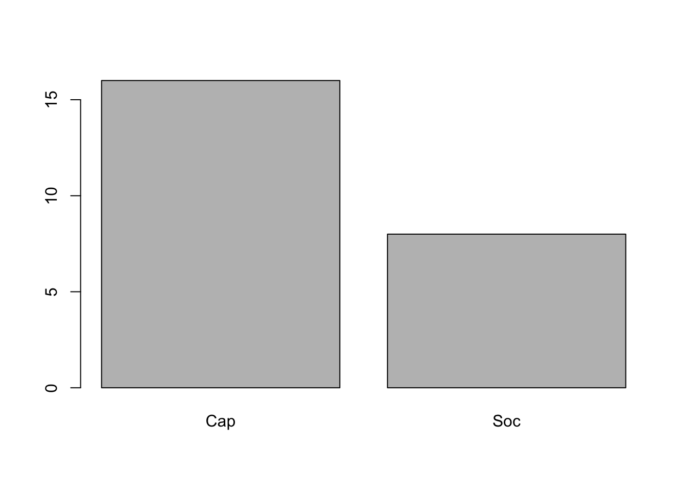
2.3.2 Analyse de la distribution des taux de mortalité infantile (TMI)
Quelques petites commandes pour camlculer les paramètres principaux de la mortalité infantile et la représenter.
# Analyse de la variable quantitative (TMI)
# calcul et visualisation des quantiles
summary(euro$TMI)## Min. 1st Qu. Median Mean 3rd Qu. Max.
## 5.800 8.475 9.600 13.121 14.825 43.000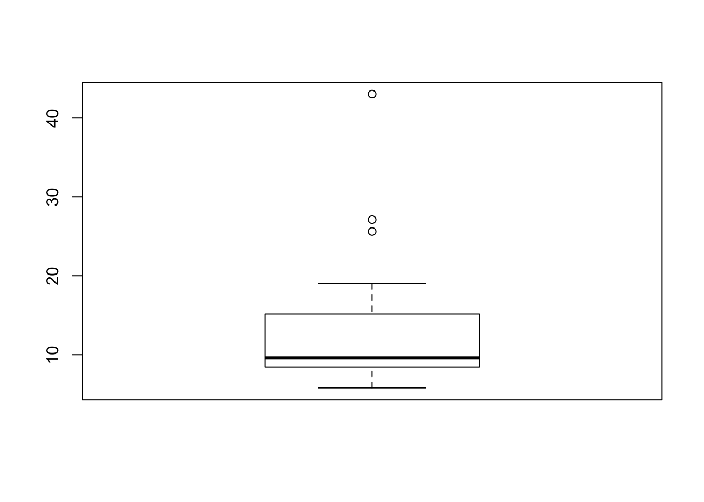
## [1] 13.12083## [1] 8.513875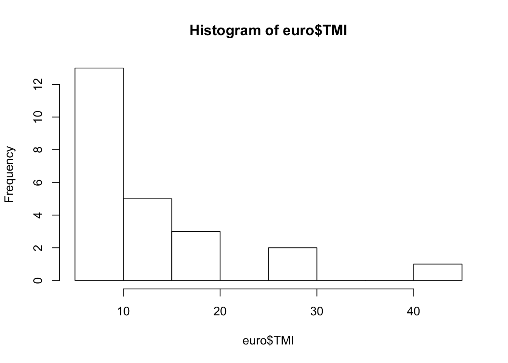
2.3.3 Comaparaison de la mortalité infantile par bloc (BLOC*TMI)
Quelques outils pour analyser conjointement les deux distributions.
## $Cap
## Min. 1st Qu. Median Mean 3rd Qu. Max.
## 5.800 7.925 8.650 9.069 9.800 15.800
##
## $Soc
## Min. 1st Qu. Median Mean 3rd Qu. Max.
## 9.20 14.35 18.25 21.23 25.98 43.00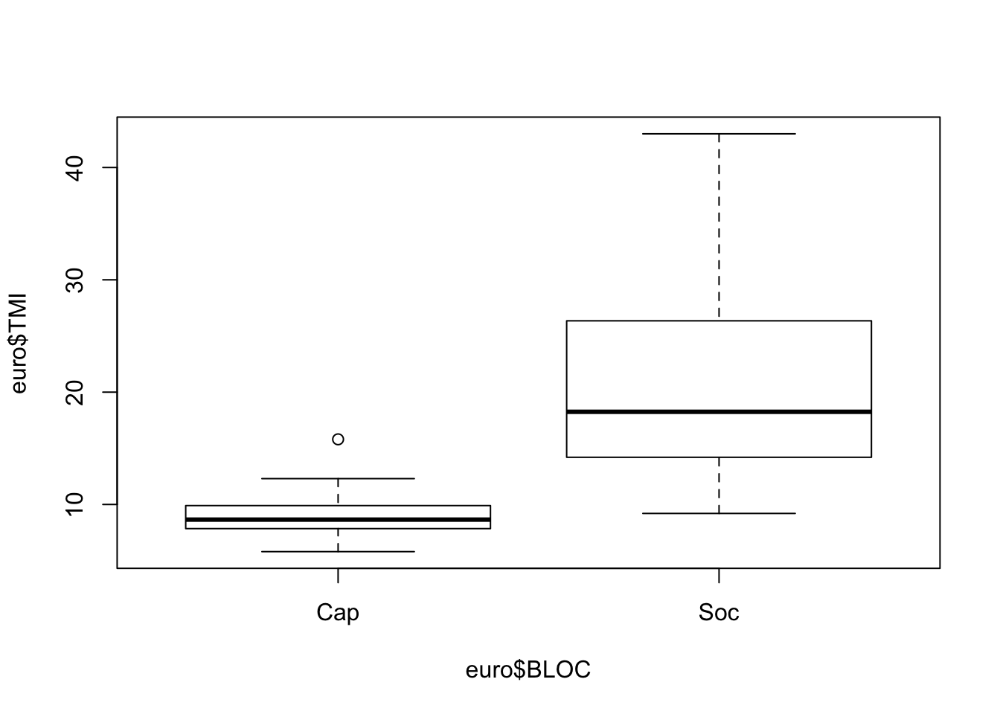
## Cap Soc
## 9.06875 21.22500## Cap Soc
## 2.434945 10.624197# visualisation des deux histogrammes
par(mfrow= c(2,1))
hist(euro$TMI[euro$BLOC =="Soc"],
# xlim = c(0,50),
main="Pays Socialistes",
col="red")
hist(euro$TMI[euro$BLOC =="Cap"],
# xlim = c(0,50),
main="Pays Capitalistes",
col="blue") 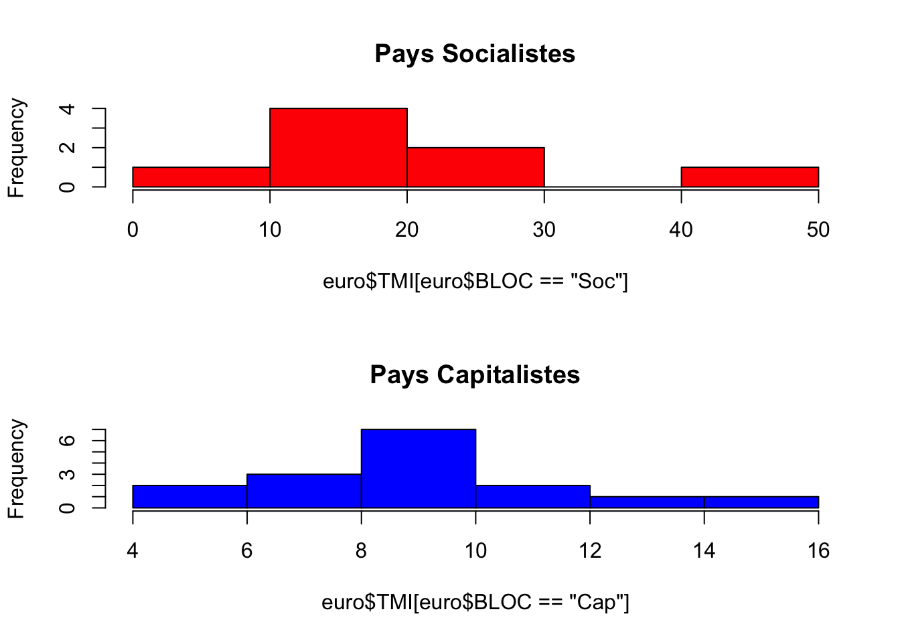
2.3.4 Test d’égalité des moyennes (BLOC*TMI)
Maintenant que nous avons pris connaissance de la forme de nos deux variables BLOC et TMI, essayons de réaliser une opération statistique de plus haut niveau : le test d’une hypothèse. Nous savons grâce aux analyses précédentes que la mortalité infantile semble plus élévée en général dans les pays socialistes que dans les pays capitalistes. Mais pouvons nous le *prouver" de façon rigoureuse en utilisant les règles de l’art ?
Bien évidemment, ce n’est pas l’apprentissage de R qui va vous apprendre la théorie des tests statistiques. Mais R va vous permettre très rapidement de mettre en oeuvre les tests que vous aurez appris en cours ou dans les manuels. Et surtout, il va vous offrir une gamme de possibilités de tests et de variantes qui devrait vous pousser à renforcer simultanément vos connaissances en R et en statitiques.
Dans l’exemple qui nous intéresse, les étudiants ayant une formation de base en statistique savent qu’il existe un test d’égalité des moyennes de deux échantillons appelé test t de student qui semble approprié au problème de comapraison de la mortalité infantile des pays socialistes et capitalistes. Il tient compte de l’effectif de ces échantillons (combiens de pays de chaque type ?) et de leur hétérogénéité interne (appelée variance). On devine intuitivement que la différence des moyennes de deux échantillons sera d’autant plus significative qu’elle oppose deux groupes homogènes comportant chacun de nombreux pays.
Si cela ne vous parait pas intuitif, imaginez un premier groupe de trois pays ayant pour mortalité (10, 20, 30) et un second groupe de trois pays également ayant pour mortalité (5,15,25). Leurs moyennes respectives sont 20 et 15, soit un écart de 5. Mais il semblerait hasardeux de conclure à de réelles différences compte tenu de l’étalement de chaque distribution.
# Comparaison de la distribution de deux échantillons
VARQUANT<-c(10,20,30,5,15,25)
VARQUALI<-c("A","A","A","B","B","B")
par(mfrow=c(1,1))
boxplot(VARQUANT~ VARQUALI)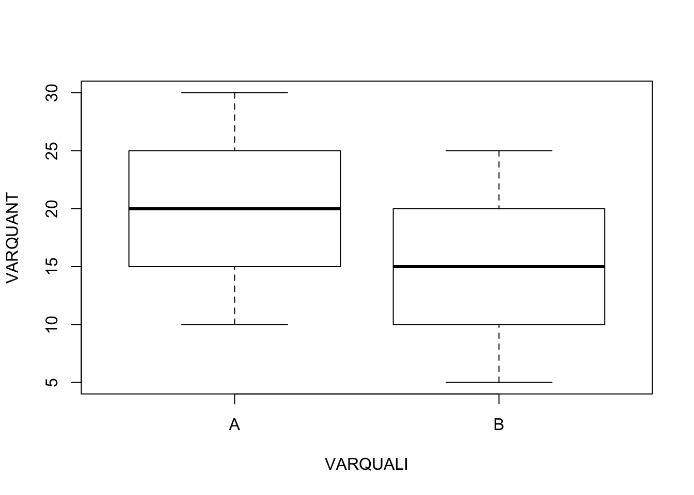
Imaginez maintenant un premier groupe de 6 pays ayant pour mortalité (18,19,20,20,21,22) et un second groupe de 10 pays ayant pour mortalité (13,14,15,15,16,17). Les moyennes des deux groupes sont toujours respectivement de 20 et de 15, mais on “sent” que les écarts sont plus pertinents car ils portent sur deux groupes plus larges et surtout plus homogènes. Dit autrement, il est peu probable que les différences observées dans la seconde expérience soient le fruit du hasard alors que, dans le premier cas, on pouvait imaginer que les pays des deux groupes n’étaient pas fondamentalement différents.
# Comparaison de la distribution de deux échantillons
VARQUANT<-c(18,19,20,20,21,22,13,14,15,15,16,17)
VARQUALI<-c("A","A","A","A","A","A","B","B","B","B","B","B")
par(mfrow=c(1,1))
boxplot(VARQUANT~ VARQUALI)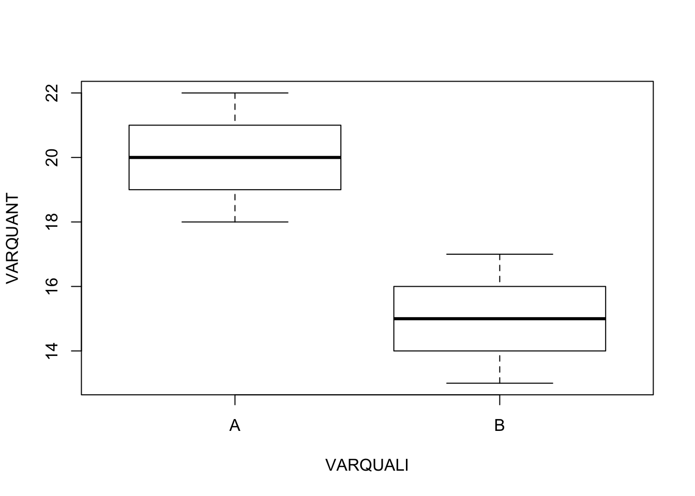
Le test T de student dont vous trouverez la formule dans tous les bons manuels va permettre de transformer l’intuition précédente en mesure objective et en donner une mesure fondamentale appelée p-value ou seuil de rejet de l’hypothèse d’indépendance entre deux caractères. Là encore, on peut donner une idée intuitive de ce qu’est la p-value en la présentant comme une mesure de la significativité de la relation entre deux caractères. De façon plus rigoureuse, la p-value mesure la probabilité que la relation observée entre deux variables (ici, la différence de moyenne) soit l’effet du hasard. La p-value varie entre 0 et 1, 0 signifiant que la significativité de la relation est certaine (la différence de moyenne ne peut pas être l’effet du hasard) et 1 signifiant qu’il n’existe aucune relation entre les deux variobles (les deux moyennes sont égales).
Examinons brièvement les valeurs de p-value sur nos deux exemples :
# Test paramétrique d'égalité des moyennes de Student
VARQUANT<-c(10,20,30,5,15,25)
VARQUALI<-c("A","A","A","B","B","B")
t.test(VARQUANT ~ VARQUALI) ##
## Welch Two Sample t-test
##
## data: VARQUANT by VARQUALI
## t = 0.61237, df = 4, p-value = 0.5734
## alternative hypothesis: true difference in means is not equal to 0
## 95 percent confidence interval:
## -17.66958 27.66958
## sample estimates:
## mean in group A mean in group B
## 20 15Vous pouvez lire dans le résultat que la p-value est de 0.5734 ce qui signifie que l’on aurait 57% de chances de se tromper si l’on affirmait que la différence de moyenne entre les deux échantillons A et B est l’effet du hasard. Voyons ce qu’il en est pour notre second exemple
# Test paramétrique d'égalité des moyennes de Student
VARQUANT<-c(18,19,20,20,21,22,13,14,15,15,16,17)
VARQUALI<-c("A","A","A","A","A","A","B","B","B","B","B","B")
t.test(VARQUANT ~ VARQUALI) ##
## Welch Two Sample t-test
##
## data: VARQUANT by VARQUALI
## t = 6.1237, df = 10, p-value = 0.0001121
## alternative hypothesis: true difference in means is not equal to 0
## 95 percent confidence interval:
## 3.180732 6.819268
## sample estimates:
## mean in group A mean in group B
## 20 15Cette fois-ci, vous pouvez voir que la valuer du t de student est beaucoup plus forte (6.13) ce qui se traduit par une p-value très proche de zéro (0.00011). La probabilité que les différences entre les deux échantillons soit l’effet du hasard est donc minime et on peut conclure avec une quasi-certiude que A et B correpondent à des groupes de pays ayant des mortalité significativement différentes.
Essayons maintenant d’appliquer ce même test de Student à notre exemple empirique de la mortalité infantile des pays socialistes et capitalistes.
##
## Welch Two Sample t-test
##
## data: euro$TMI by euro$BLOC
## t = -3.1946, df = 7.3701, p-value = 0.01417
## alternative hypothesis: true difference in means is not equal to 0
## 95 percent confidence interval:
## -21.06338 -3.24912
## sample estimates:
## mean in group Cap mean in group Soc
## 9.06875 21.22500Cette fois-ci le t de Student est égal à -3.19 et la p-value est égale à 0.0147, ce qui signifie que nous avons environ 1.5% de chances que les différences observées entre pays socialistes et capitalistes soient le simple effet du hasard et ne reflètent pas une véritable opposition. Du coup, que faut-il conclure ?
En sciences sociales, il est de tradition de considérer comme significatives les relations comportant un risque d’erreur inférieur à 5% soit 0.05. Puisque notre p-value est inférieure à 0.05, nous pouvons donc nous appuyer sur cette tradition et écrire que “l’on peut affirmer avec un risque d’erreur inférieur à 5% que les pays socialistes et capitalistes présentaient des différences significatives de mortalité infantile en 1988”.
Ou bien écrire plus simplement “En 1988 en Europe, la mortalité infantile moyenne des pays socialistes (21.2 P.1000) était significativement plus forte que celles des pays capitalistes (9.1 p.1000)” et ajouter dans une note en bas de page la remarque qui fait chic p-value=0.0147.
Ne concluez cependant pas trop vite que vous maitrisez désormais toutes les subtilités du test statistique d’égalité des moyennes. Si notre raisonnement précédent est approximativement juste, il serait sans doute critiqué par un vrai statisticien qui noterait immédiatement que le test t de student n’est pas le plus adapté à notre problème car (1) les distributions de mortalité ne sont pas gaussiennes et comportent des valeurs exceptionnelles comme l’Albanie pour les pays socialites ou le Portugal pour les pays capitalistes et (2) la variance des deux échantillons (leur hétérogénéité interne) n’est pas égale ce qui peut fausser l’usage du test de Student. Dans le cas présent, un bon statisticien préférerait sans doute utiliser un test non paramétrique, fondé sur la comparaison de l’ordre des observations et non pas leur valeur.
Soit par exemple le test de Wilcoxon, qu’il est très facile de mettre en oeuvre sour R en changeant à peine notre programme.
# Test non paramétrique d'égalité des médianes de Wilcoxon (correct)
wilcox.test(euro$TMI~euro$BLOC) ##
## Wilcoxon rank sum test
##
## data: euro$TMI by euro$BLOC
## W = 8, p-value = 0.0001822
## alternative hypothesis: true location shift is not equal to 0LA p-value est désormais égale à 0.0001 et on peut conclure avec certitude à l’existence de différence entre nos deux échantillons, ce qui n’était pas le cas avec le test de student, moins adapté au cas étudié.
2.4 ANALYSE 2 (Y Quanti / X Quanti)
La mortalité infantile (Y) peut-elle être estimée à l’aide du PIB/habitant (X) ?
Cette exemple de mise en relation de deux variables quantitatives permet de passer rapidement en revue les principe de base de l’analyse des corrélations entre plusieurs variables et de la réalisation d’un modèle d’ajustement linéaire. Il faut toutefois noter que l’exemple a surtout des vertus pédagogiques car le PNB/hab. des pays socialistes d’Europe en 1988 n’était pas véritablement connu et reposait sur des estimations.
2.4.1 Extraction d’une matrice à partir d’un tableau
Beaucoup de packages R ne sont pas adaptés au traitement tableau de données hétérogènes (type data.frame) mélangeant des variables qualitatives ou quantitatives. Il est donc souvent nécessaire d’extraire d’un tableau hétérogène les seuls variables quantitatives pour en faire un ensemble de lignes et de colonnes de nature homogène (type matrix). Cette matrice aura comme identifiant de colonnes le nom des variables (colnames) et il est pratique de lui ajouter comme nom de ligne l’identifiant des individus (rownames). Voici comment procéder :
## TMI PNB URB FEC POP
## ALB 43.0 600 34 3.3 3.1
## AUT 10.3 10000 55 1.4 7.6
## BEL 9.7 9200 95 1.5 9.9
## BUL 14.5 2000 65 2.0 9.0
## DAN 8.4 12600 84 1.5 5.1
## ESP 9.0 4800 91 1.7 39.0
## FIN 5.8 12200 62 1.6 4.9
## FRA 8.0 10100 73 1.8 55.9
## GRE 12.3 3700 58 1.7 10.1
## HON 19.0 2000 58 1.8 10.6
## IRL 8.7 5100 56 2.4 3.5
## ITA 10.1 8600 72 1.4 57.3
## NOR 8.5 15500 71 1.7 4.2
## PAY 7.7 10000 89 1.6 14.7
## POL 17.5 2100 61 2.2 38.0
## POR 15.8 2200 30 1.7 10.3
## RDA 9.2 3700 77 1.7 16.6
## RFA 8.6 12000 94 1.4 61.2
## ROU 25.6 1200 49 2.3 23.0
## ROY 9.5 8900 91 1.8 57.1
## SUE 5.9 13200 83 1.8 8.4
## SUI 6.8 17800 61 1.5 6.6
## TCH 13.9 3200 74 2.0 15.6
## YOU 27.1 2300 47 2.1 23.6## [1] 24 5## num [1:24, 1:5] 43 10.3 9.7 14.5 8.4 9 5.8 8 12.3 19 ...
## - attr(*, "dimnames")=List of 2
## ..$ : chr [1:24] "ALB" "AUT" "BEL" "BUL" ...
## ..$ : chr [1:5] "TMI" "PNB" "URB" "FEC" ...2.4.2 Calcul des corrélations
La façon la plus simple de calculer un coefficient de corrélation est d’appliquerla fonction cor à une matrice :
## TMI PNB URB FEC POP
## TMI 1.0000000 -0.67645013 -0.6523693 0.8141417 -0.13586790
## PNB -0.6764501 1.00000000 0.4929530 -0.6045034 0.01784716
## URB -0.6523693 0.49295300 1.0000000 -0.5436824 0.39790430
## FEC 0.8141417 -0.60450337 -0.5436824 1.0000000 -0.20123367
## POP -0.1358679 0.01784716 0.3979043 -0.2012337 1.00000000R calcule par débaut le coefficient de corrélation linéaire de Bravais-Pearson qui varie entre -1 (corrélation négative parfaite) et +1 (corrélation positive parfaite). On peut ainsi voir que le taux de mortalité infantile (TMI) a une très forte corrélation positive avec l’indice conjonctuel de fécondité (+0.81) et une forte corrélation négative avec le PNB/hab (-0.68) ou le taux d’urbanisation (-0.65). La corrélationavec la population du pays est négative mais faible (-0.14).
Cette procédure n’est cependant pas totalement convaincante d’un point de vue statistique car elle n’affiche pas le degré de significativité de la liaison statistique, la fameuse p-value dont nous avons discuté dans l’exemple précédent. Cette significativité dépend en effet à la fois (1) de la valeur absolue du coefficient de corrélation (plus on se rapproche de +1 ou -1,plus la relation est significative) mais aussi (2) de la taille de l’échantillon utilisé pour calculer cette corrélation, appelée nombre de degrés de liberté. Lorsqu’on calcule un coefficient de corrélation, le nombre de dégré de liberté est égal à (N-2) c’est-àdire au nombre d’observations (N) moins le nombre de paramètres utilisés pour faire le calcul (soit 2, puisqu’on a besoin de la moyenne de X et de celle de Y).
On va donc plutôt faire appel à la procédure rcorr qui se trouve dans le package Hmisc.
# Coefficient de corrélation de Peason avec test de significativité
library(Hmisc)
rcorr(mat, type="pearson")## TMI PNB URB FEC POP
## TMI 1.00 -0.68 -0.65 0.81 -0.14
## PNB -0.68 1.00 0.49 -0.60 0.02
## URB -0.65 0.49 1.00 -0.54 0.40
## FEC 0.81 -0.60 -0.54 1.00 -0.20
## POP -0.14 0.02 0.40 -0.20 1.00
##
## n= 24
##
##
## P
## TMI PNB URB FEC POP
## TMI 0.0003 0.0006 0.0000 0.5267
## PNB 0.0003 0.0144 0.0018 0.9340
## URB 0.0006 0.0144 0.0060 0.0541
## FEC 0.0000 0.0018 0.0060 0.3457
## POP 0.5267 0.9340 0.0541 0.3457On voit ainsi apparaître deux tableaux, l’un avec les coefficients de corrélation des variables et l’autre avec les p-value associées à chacun de ces coefficients. Il apparaît alors que les corrélations du taux de mortalité infantile sont très significatives (<0.001) avec le PNB/hab, le taux d’urbanisation et l’indice conjoncturel de fécondité. Mais que la corrélation entre mortalité infantile et population est non-significative.
Ajoutons maintenant une autre précaution statistique consistant à calculer un autre coefficient de corrélation, le coefficient de corrélation de rang aussi appelé coefficient de Spearman. L’intérêt de ce coefficient est tout d’abord de limiter le jeu des valeurs exceptionelles (outlier) qui sont liées à la position excentré d’une seule observation. Mais c’est aussi plus généralement de mettre en évidence des relations croissantes ou décroissantes de forme non-linéaire entre deux variables. En présence de ces deux types de singularité, le coefficient de Spearman affiche souvent des valeurs très divergentes de celui de Pearson. Et la découverte d’une discordance entre les deux coefficients est un indice à ne pas négliger.
## TMI PNB URB FEC POP
## TMI 1.00 -0.90 -0.57 0.51 0.17
## PNB -0.90 1.00 0.50 -0.65 -0.19
## URB -0.57 0.50 1.00 -0.44 0.35
## FEC 0.51 -0.65 -0.44 1.00 -0.07
## POP 0.17 -0.19 0.35 -0.07 1.00
##
## n= 24
##
##
## P
## TMI PNB URB FEC POP
## TMI 0.0000 0.0037 0.0113 0.4331
## PNB 0.0000 0.0124 0.0006 0.3859
## URB 0.0037 0.0124 0.0325 0.0917
## FEC 0.0113 0.0006 0.0325 0.7415
## POP 0.4331 0.3859 0.0917 0.7415Dans l’exemple (ancien mais pédagogique) qui a été choisi, il y a clairement une singularité dans la relation entre TMI et PNB puisque la corrélation qui était de (+0.68) avec le coefficient de Pearson grimpe à (+0.90) avec celui de Spearman. Dans le même temps, la relation entre TMI et FEC chute de (+0.81) à (+0.51) ce qui indique une autre singularité. Il faudra donc examinr soigneusement les nuages de points pour comprendre d’où viennent ces divergences, ce que l’on va faire au cours de l’étape suivante.
2.4.3 Visualisation de la forme de la relation entre deux variables quantitatives
On peut visualiser une relations entre deux variables X et Y à l’aide de l’instruction générique plot(). Soit par exemple la relation entre urbanisation et mortalité infantile :
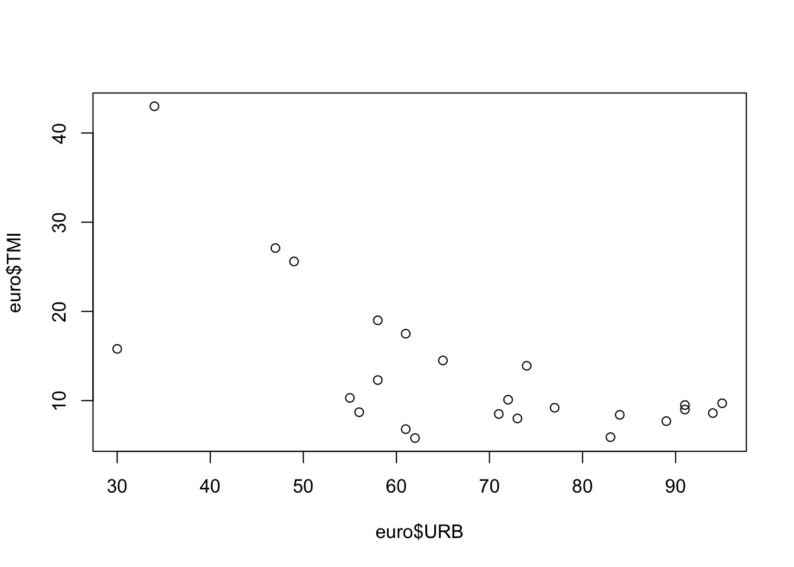
On peut également ranger plusieurs graphiques en une seule figure en utilisant l’instruction générale par qui définit le format des graphiques, associée au paramètre mfrow qui indique combien de lignes et de colonnes on souhaite générer. Chacune des case de ce tableau servira successivement à afficher les graphiques demandés par l’instruction plot. Ici, nous déclarons que nous voulons ordonner les graphiques sur 2 lignes et 2 colonnes puis nous executons 4 fois de suite l’instruction plot.
# Un seul graphique de synthèse
par(mfrow= c(2,2))
plot(euro$PNB,euro$TMI)
plot(euro$URB,euro$TMI)
plot(euro$FEC,euro$TMI)
plot(euro$POP,euro$TMI)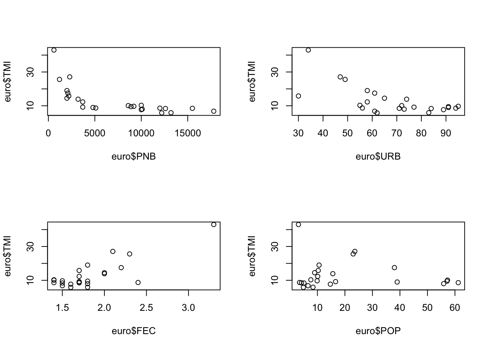
Ces figures permettent (avec un peu d’habitude …) d’expliquer les divergences observées entre les coefficients de corrélation de Pearson et de Spearman.
par(mfrow= c(1,2))
X<-euro$PNB
Y<-euro$TMI
corlin<-round(cor(X,Y),3)
reglin<-lm(Y~X)
plot(X,Y, main=paste("Coeff Pearson = ",corlin))
abline(reglin,col="red")
rankX<-rank(X)
rankY<-rank(Y)
corrank<-round(cor(rankX,rankY),3)
regrank<-lm(rankY~rankX)
plot(rankX,rankY, main=paste("Coeff Spearman = ",corrank))
abline(regrank,col="red")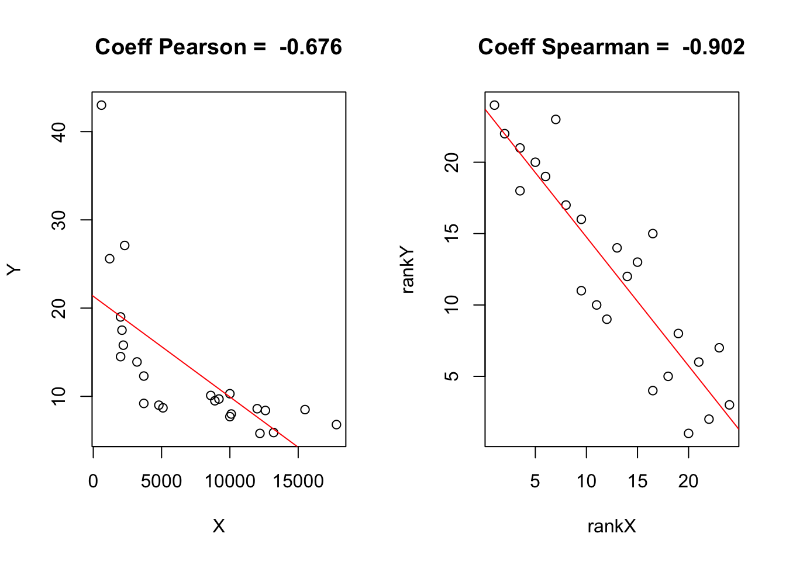
- la relation entre TMI et PNB est clairement non linéaire et forme un arc de parabole plutôt qu’une droite. C’est la raison pour laquelle le coefficient de Spearman était beaucoup plus élevé que celui de Pearson. En effet, lorsque l’on transforme les variables en rang, la courbure disparaît.
par(mfrow= c(1,2))
X<-euro$FEC
Y<-euro$TMI
corlin<-round(cor(X,Y),3)
reglin<-lm(Y~X)
plot(X,Y, main=paste("Coeff Pearson = ",corlin))
abline(reglin,col="red")
rankX<-rank(X)
rankY<-rank(Y)
corrank<-round(cor(rankX,rankY),3)
regrank<-lm(rankY~rankX)
plot(rankX,rankY, main=paste("Coeff Spearman = ",corrank))
abline(regrank,col="red")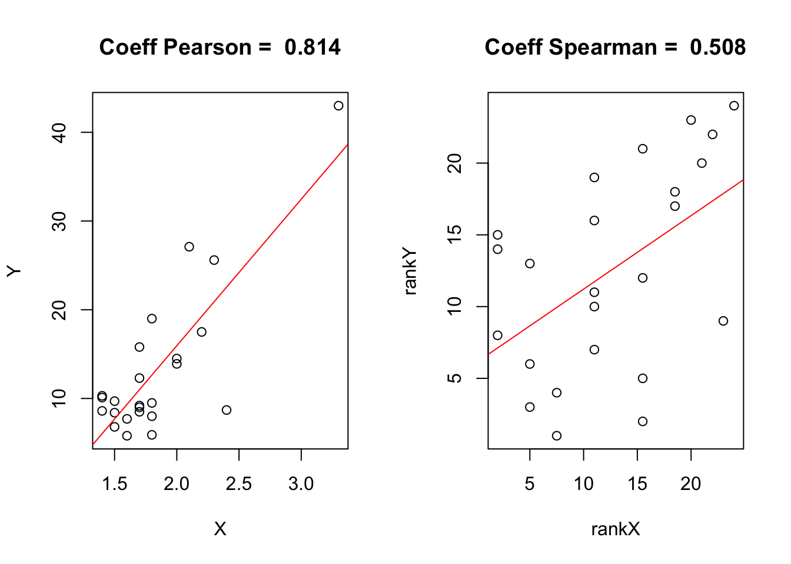
- la relation entre TMI et FEC est quant à elle influencée par une valeur exceptionnelle, l’Albanie, qui affiche une fécondité et une mortalité infantile excpetionnnelles. Le point Albanie est situé très en dehors du nuage des autres points et il fait fortement augmenter le coefficient de Pearson. Mais si l’on passe en rang, son effet disparaît et le nuage de point apparaît beaucoup moins linéaire, ce qui explique la valeur plus faible du coefficient de Spearman.
Le point important à retenir (en l’absence de la lecture d’un manuel de statistique plus précis) est qu’on ne doit pas tenter de faire passer une droite dans un nuage de points si celui-ci ne forme pas un ensemble de points régulièrement alignés. Il faut éviter d’utiliser la régression linéaire sur un nuage de points ayant une courbure ou sur un nuage de points comportant des valeurs exceptionnelles. On va voir dans la section suivante quelques “trucs” permettant de corriger la forme d’un nuage de point inadapté à une analyse de régression linéaire (ce qui ne dispense pas de lire un manuel de statistique expliquant ces trucs à l’aide des concepts plus précis d’autocorrélation des résidus, d’hétéroscédasticité, etc…)
2.4.4 Un premier modèle de régression linéaire (quick & dirty …)
Le calcul d’une régression linéaire se fait très facilement avec l’instruction lm qui est l’acronyme de linear model. La particularité de R par rapport à d’autres logiciels est de stocker les résultats d’une régression (et plus généralement d’un modèle statistique quelconque) dans un objet dont on choisit le nom (ici : MonModele). C’est objet est uen sorte de grand sac sans fonds contenant des dizaines de résultats que l’on peut sortir un par un en fonction de ses besoins et surtout de ses connaissances en statistiques… Les débutants se limiteront à demander de sortir du sac à malice un résumé (summary) de la régression qu’ils viennent d’opérer :
##
## Call:
## lm(formula = euro$TMI ~ euro$PNB)
##
## Residuals:
## Min 1Q Median 3Q Max
## -7.921 -3.222 -1.440 1.064 22.344
##
## Coefficients:
## Estimate Std. Error t value Pr(>|t|)
## (Intercept) 21.3403638 2.3136443 9.224 5.14e-09 ***
## euro$PNB -0.0011403 0.0002647 -4.308 0.000284 ***
## ---
## Signif. codes: 0 '***' 0.001 '**' 0.01 '*' 0.05 '.' 0.1 ' ' 1
##
## Residual standard error: 6.411 on 22 degrees of freedom
## Multiple R-squared: 0.4576, Adjusted R-squared: 0.4329
## F-statistic: 18.56 on 1 and 22 DF, p-value: 0.0002843On trouve dans ce résumé l’essentiel à savoir l’équation de la droite de régression linéaire dans la partie coefficient (TMI = -0.00114 * PNB + 21.34), le pouvoir explicatif du modèle qui est le carré du coefficient de corrélation appelé en anglais R-Squared (0.457 soit 46%) et la significativité générale du modèle qui est fournie par la p-value (0.00028). Cette dernière est en l’occurence conforme au coefficient de corrélation entre TMI et PNB car nous faisons une régression simple. On verra ultérieurement le cas des régressions multiples.
La visualisation de cette droite de régression peut se faire très simplement en traçant le nuage de point avec plot et en ajoutant la droite en utilisant l’instruction abline appliquée au sac à malice où se trouvent les résultats de notre modèle. Même si nous ignorons le contenu détaillé de ce sac, nous savons que R va y trouver les éléments utiles à savoir les coefficients de la droite de régression que nous avons déjà vu dans le résumé. On va faire un petit effort d’habillage en ajoutant à la figure un titre principal (main) et des titres d’axes (xlab,ylab).
par(mfrow=c(1,1))
plot(euro$PNB,euro$TMI,
main=" Richesse et mortalité infantile en Europe vers 1988",
ylab="PNB en $ par habitant (1988)",
xlab="Taux de mortalité infantile en p. 1000 (1988)")
abline(MonModele, col="red")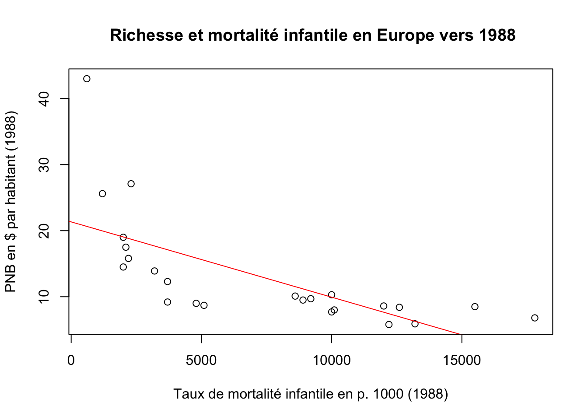
Nous avons réussi à faire notre premier modèle de régression sous R ! Mais la vérité oblige à dire qu’il n’est pas satisfaisant puisque nous avons ajusté une droite dans un nuage de point qui est manifestement de forme non linéaire. Essayons de faire mieux, en montrant que la question statistique peut recouper des question plus théoriques de géographie économique et de géographie politique.
2.4.5 Un deuxième modèle plus satisfaisant sur le plan statistique et théorique
La courbure de la relation entre PNB/habitant et taux de mortalité infantile est certes un problème statistique. Mais elle soulève aussi une question théorique plus intéressante : Est-il raisonnable et logique de penser que plus le PNB/hab. augmente, plus la mortalité infantiel décroît de façon linéaire ?
Notre modèle précédent (Y=aX+b) est en partie absurde puisqu’il nous dit que la mortalité infantile minimale est de 21.34°/°° dans un pays ayant un PNB nul (on sait qu’il existe des mortalité infantile plus forte) et surtout il suppose que chaque fois que le PNB augmente de 1000 $, la mortalité infantile baisse de 1.1 °/°°. Du coup, ce modèle prévoit une absence totale de mortalité infantile pour les pays ayant un revenu supérieur à 15000 $/hab. Et il annonce froidement des mortalités infantile négatives au delà de ce niveau de richesse ! Bref, il y a une inconsistance logique dans un tel modèle, indépendamment du problème statistique de non linéarité.
Or, ce que nous disent les théoriciens du développement comme A. Sen est l’existence de rendements décroissant dans les progrès au fur et à mesure que la richesse augmente. En d’autres termes, la mortalité infantile diminue rapidement quant on passe de l’extrême apuvreté à la pauvreté. Mais ensuite elle baisse de moins en moins vite et son effet devient négligeable au delà d’un seuil de richesse. Le modèle correspondant à ces hypothèses théoriques est donc un modèle de décroissance non linéaire.
Il peut s’agir d’une loi exponentielle négative qui peut s’écrire Y = b.exp(-aX), ce que l’on peut transformer en équation linéaire en le réécrivant sous la forme log(Y) = log(b)+aX. Ou bien d’une loi puissance négative qui peut s’écrire Y = b.X^a et se transforme en équation linéaire log(y) = a.log(X)+log(b). Si l’on n’a pas de préférence théorique pour l’une ou l’autre de ces lois, on peut simplement examiner celle qui donne le meilleur ajustement linéaire après transformation logarithmique :
par(mfrow= c(1,2))
X<-euro$PNB
Y<-euro$TMI
corexp<-round(cor(X,log(Y)),3)
regexp<-lm(log(Y)~X)
plot(X,log(Y), main=paste("Modèle exponentiel : r = ",corexp))
abline(regexp,col="red")
corpui<-round(cor(log(X),log(Y)),3)
regpui<-lm(log(Y)~log(X))
plot(log(X),log(Y), main=paste("Modèle puissance : r = ",corpui))
abline(regpui,col="red")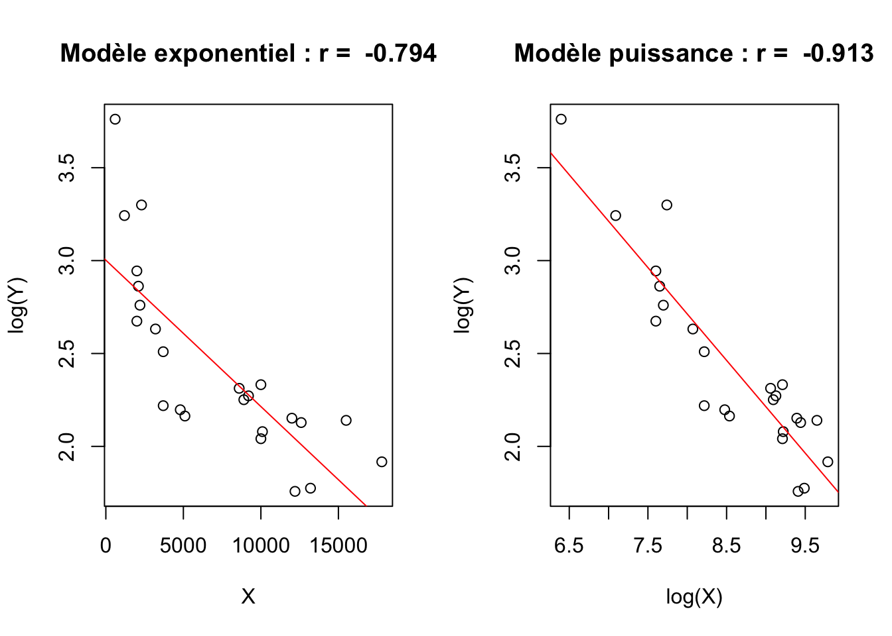
La comparaison des coefficients de corrélation mais aussi l’examen de la forme des nuages de points plaide clairement en faveur du choix du modèle puissance. Il demeure en effet une nette courbure du nuage de points dans le graphique du modèle exponentiel et l’ajustement obtenu est plus faible. Le modèle puissance affiche un alignement presque parfait des points avec une corrélation très élevée. Donc, si l’on ne dispose pas d’arguments théoriques ou empiriques particuliers en faveur du modèle exponentiel, on retiendra le modèle puissance pour modéliser la relation entre mortalité infantile et PNB/habitant des pays européens en 1988.